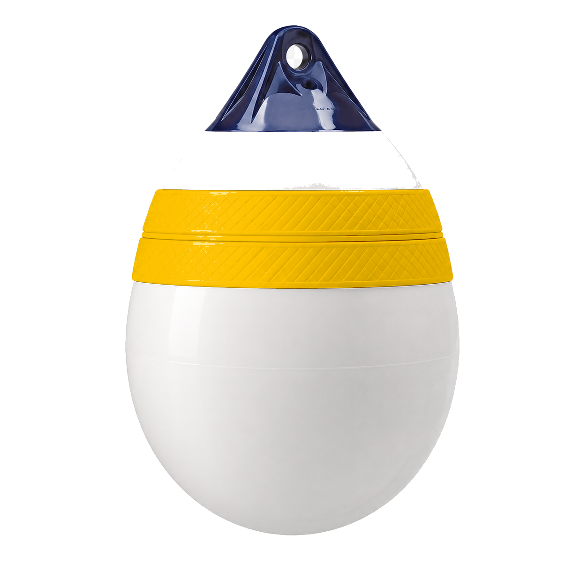

Retour aux bags
Bags
Sea fender bag Sphère
Le format grand volume pour bateau et mouillage. Choisis la couleur de la bague.
Couleur sélectionnée : Jaune
- Diamètre50 cm
- FormeSphérique
- Idéal pourBateau, mouillage